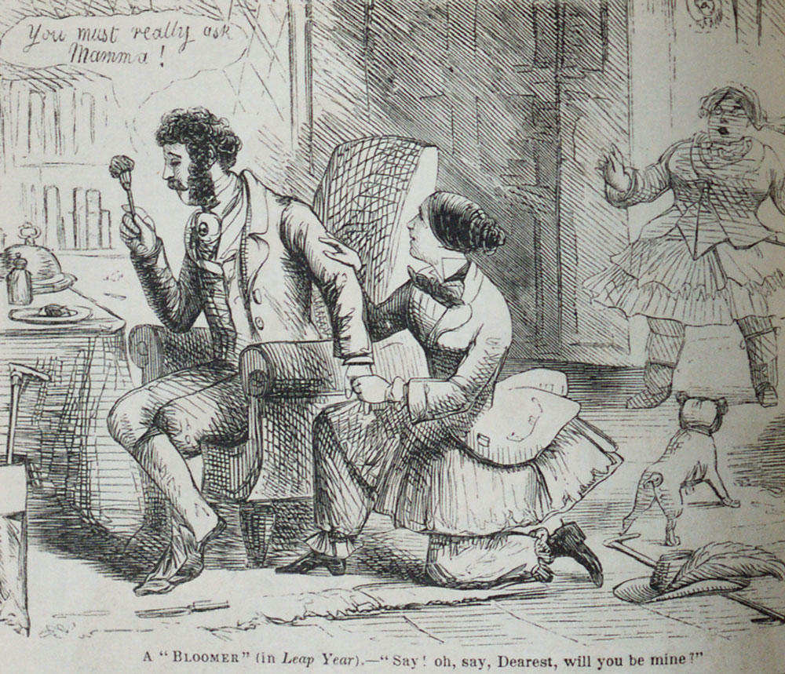

¡Bisiesto!
29 de febrero de 2012, un proceso de validación se negó a funcionar correctamente hoy en mi trabajo. Esencialmente el bug era el siguiente: un programa debía confrontar con una fecha anterior a 10 años atrás. La solución que el programador implementó consiste simplemente en restar 10 al año. Así, para calcular una fecha anterior a 10 años simplemente le resta 10 al año, obteniendo la fecha imaginaria: 29 de febrero de 2002.
Por curioso que pueda parecer el año bisiesto suele provocar problemas a los programadores.
Al parecer la historia del chat de Gmail mostraba la fecha del 31 de diciembre de 1969 para todos los mensajes grabado con fecha 29 de enero de 2012.
Joel Spolsky, co fundador de Stack OverFlow se rie en Twitter:
haha, we had a leap-year bug on stack overflow today. The author of http://t.co/FQOVGzkw did not take the community's advice
— Joel Spolsky (@spolsky) February 29, 2012
“haha, we had a leap-year bug on stack overflow today. The author of http://stackoverflow.com/questions/9/how-do-i-calculate-someones-age-in-c did not take the community's advice”
No está muy claro que fue, pero al parecer tuvieron un error al calcular el año bisiesto.
En 2008 se descubre el bug del bisiesto de Zune, el hoy descontinuado producto de Microsoft. Se descubre que la versión de 30 Gb de este dispositivo se congela todos los 31 de diciembre de cualquier año bisiesto!
El problema del Zune es que al determinar el año quedaba encerrado en un loop infinito. Lo que ocurría era lo siguiente, el reloj interno del Zune contaba el tiempo en segundos a partir del 1 de enero de 1980. El problema estaba (¿está?) en este pedazo de código:
year = ORIGINYEAR; /* = 1980 */
while (days > 365)
{
if (IsLeapYear(year))
{
if (days > 366)
{
days -= 366;
year += 1;
}
}
else
{
days -= 365;
year += 1;
}
}
En un año normal este loop no tiene problemas, pero en el último día de año bisiesto, cuando hay 366 días por culpa del if (year > 366) el loop deja de restar dias, y el ciclo no se detiene nunca.
Que los programadores tienen problemas con los años bisiestos queda de manifiesto al leer las respuestas a esta pregunta en StackOverflow.
Pero resulta que este “bug” es más antiguo que los computadores.
Después de todo el año bisiesto es la corrección de un bug celestial :), nuestro planeta no gira alrededor del sol en una orbita con duración constante de 365 días, fue en tiempos del papa Gregorio que se corrigió este problema agregando un día cada cuatro años, excepto en las centurias, aunque se exceptúan las centurias divisibles por cuatrocientos. Esto es un poco complicado, y la fuente de otros tipos de bugs. He visto implementaciones en que se aplica la regla de calcular el bisiesto simplemente dividiendo por 4, ¡ya los quiero ver cuando consideren el 2100 como bisiesto!
Pero al parecer hay otro “bug” del bisiesto más antigua y fascinante. Una antigua ley inglesa establecía que “el 29 de febrero no debía considerarse como un día real”. Dado esto muchas tradiciones podían ser ignoradas, después de todo ese día no contaba. Así que los 29 de febrero estaba permitido que las damas le propusieran matrimonio a los caballeros, si el hombre se negaba estaba obligado a comprarle un regalo en compensación. Esto generó algunas fiestas, y bailes que celebraban este “poder especial” con el que contaban las mujeres en estas fechas, que les permitía saltarse las rígidas convenciones sociales de la época.
